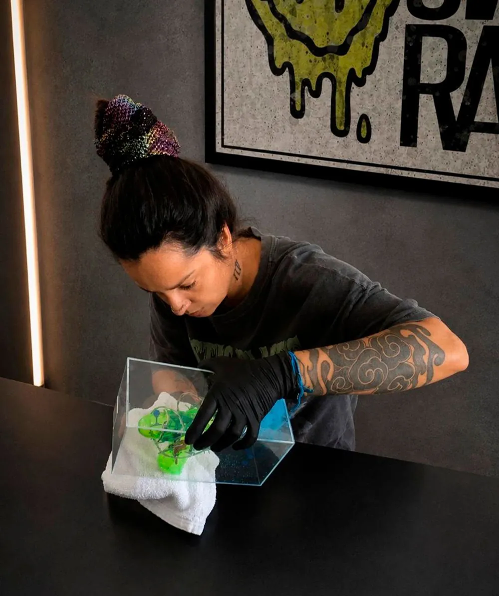

3.300 a.C. · Europa
Os primeiros registros dessa prática datam de cerca de 3,3 mil anos antes de Cristo. Na época, curandeiros usavam carvão para fazer os desenhos na pele, acreditando que isso restabeleceria a saúde dos habitantes dos povoados.
Sobre
Sou artista visual, tatuadora e criadora da DAC ART INK. Sou uma adulta autista, com múltiplas habilidades artísticas, e minha vivência no espectro influencia profundamente a forma como percebo e crio. A arte é a minha linguagem: o modo de expressar o que muitas vezes não cabe em palavras.
Minha produção parte da arte contemporânea, com forte influência surrealista. Transita entre o retrô, o nonsense, o urbano, o alternativo e o experimental, e passa pelo desenho, pela pintura, pela fotografia e pela arte digital. Trabalho em pequenas séries ou em peças únicas, valorizando a singularidade de cada uma.
Na pele, tatuo em handpoke, com máquina, em pokechine (técnica própria, que une máquina e handpoke) e com máquina artesanal.

Processo
O handpoke é uma técnica antiga de tatuagem, em que a tinta é aplicada manualmente na pele, ponto a ponto, de forma precisa e controlada.
A diferença está no processo e na estética: sessões mais calmas, quase meditativas, resultando em uma arte única e atemporal.
Um pouco de história
3.300 a.C. · Europa
Os primeiros registros dessa prática datam de cerca de 3,3 mil anos antes de Cristo. Na época, curandeiros usavam carvão para fazer os desenhos na pele, acreditando que isso restabeleceria a saúde dos habitantes dos povoados.
Tebori · Japão
No Japão, uma das técnicas de tatuagem mais antigas e reverenciadas é o tebori. A prática exige grande habilidade e precisão: os tatuadores usavam agulhas montadas em varas de bambu ou de metal para inserir a tinta na pele.
DAC Galeria
A DAC Galeria nasceu da vontade de reunir minhas criações num só lugar: obras autorais, esculturas, objetos e acessórios selecionados por mim, que dialogam com a mesma estética.
Num tempo em que quase tudo é feito para ser visto por alguns segundos e esquecido, as coleções da galeria foram feitas para serem observadas com calma, por quem gosta de descobrir detalhes e construir a própria leitura.
